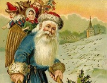

圣诞节是基督教世界最大的节日。每年的12月25日，是基督教徒纪念耶稣诞生的日子，称为圣诞节。12月25日这一天，各教会都会分别举行崇拜仪式。天主教与东正教举行圣诞弥撤，新教举行圣诞礼拜。有些教会的庆祝活动从午夜零点就开始。除崇拜仪式外，还演出圣诞剧，表演耶稣降生的故事。
据说耶稣是因着圣灵成孕，由圣母玛利亚所生的。神更派遣使者加伯列在梦中晓谕约瑟，叫他不要因为马利亚未婚怀孕而不要她，反而要与她成亲，把那孩子起名为“耶稣”，意思是要他把百姓从罪恶中救出来。

圣诞节当然少不了圣诞老人,根据圣经中记载，书中并没有提及这一人物。到底他是如何成为圣诞的主角之一的呢？
圣诞老人（Santa Claus）西方神话传说中的人物，在传说中西方圣诞节前夜时悄悄赠送礼物给小孩子，是耶稣基督诞辰瞻礼即西方圣诞节的代表角色之一。他普遍被认为是基督教的圣人圣·尼古拉斯（Saint Nicholas）的衍生形象，圣诞老人的起源或与一种被称为毒蝇伞的红白相间蘑菇有关
传说每到12月24日晚上，有个神秘人会乘驾由9只驯鹿拉的雪橇在天上飞翔，挨家挨户地从烟囱进入屋里，然后偷偷把礼物放在好孩子床头的袜子里，或者堆在壁炉旁的圣诞树下。
圣诞树一直是庆祝圣诞节不可少的装饰物，如果家里没有圣诞树，就大大减少了过节气氛。关于圣诞树的来源有多种不同的传说。
据说圣诞树最早出现在古罗马12月中旬的所谓农神节。现在通常人们在圣诞前后把一棵常绿植物如松树弄进屋里或者在户外，并用圣诞灯和彩色的装饰物装饰。并把一个天使或星星放在树的顶上。
有的传说上帝的使者化身为小男孩，在被一个穷苦人家招待后，将一根树枝插在地上，长成挂满礼物的圣诞树；还有的传说圣诞树是为圣母玛利亚遮挡风雪的那棵树。
更多内容可以百度一下